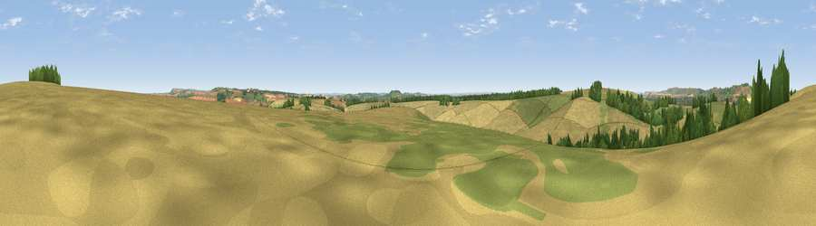

Viewpoint near Easton Royal
#21046 in England · top 36% of its area beats it · near Easton Royal · access?Where it is
The exact computed spot (SU 20875 58625). Click the marker for map links.
Public access: no public right of way or access land is recorded at this exact spot — it may be on private land. Computed from Natural England's CRoW access layer and OpenStreetMap rights of way — not the legal definitive map. Always verify locally.
The view, rendered

A 360° render of this exact spot computed from the terrain model, tree cover and land cover — summer colours, afternoon light, calibrated against photographs of famous viewpoints. Real trees, hedges and buildings will differ in detail.
The panorama
Grey silhouette: terrain skyline in each direction (720 bearings, Earth curvature and refraction included). Dashed green: skyline with trees (+15 m) and buildings (+8 m) as obstacles. Blue strip: how far the ground is visible on each bearing.
Where the view opens
Wedge length = distance to the farthest visible ground on that bearing (vegetation-aware). Rings at 10, 25 and 50 km.
What fills the view
57% cropland · 36% grassland · 7% woodland
Angular shares of the visible panorama (visual magnitude), not map area. Landscape diversity 0.39 (0–1 Shannon).
Key numbers
More beautiful places nearby
The staircase of upgrades: each row has a higher view potential than everything closer. Driving times are estimates from straight-line distance, calibrated against real road routing — check an actual route before setting out.
| Place | Direction | Drive | Score |
|---|---|---|---|
| Easton Clump | NNE · 1 km | ~2 min | 64.0 |
| Martinsell viewpoint | NNW · 6 km | ~13 min | 76.9 |
| Viewpoint near Berwick St John | SW · 47 km | ~68 min | 78.2 |
| Viewpoint near Stinchcombe | NW · 61 km | ~84 min | 80.5 |
| Beacon Hill | SE · 72 km | ~95 min | 85.8 |
| Mottistone Down | SSE · 77 km | ~100 min | 87.2 |
| Viewpoint near Kimmeridge | SSW · 85 km | ~109 min | 87.5 |
| Viewpoint near Chale | SSE · 87 km | ~111 min | 88.3 |
51.32635, -1.70179 · source: screening · position refined by local search. Computed location — check access rights before visiting.